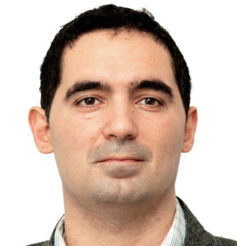
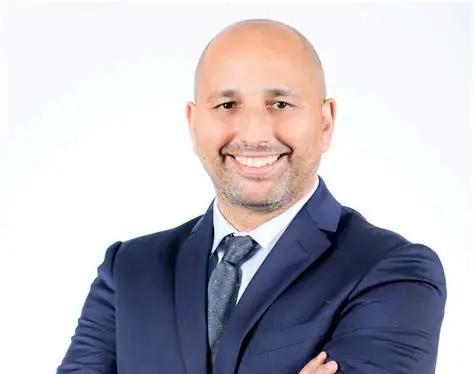
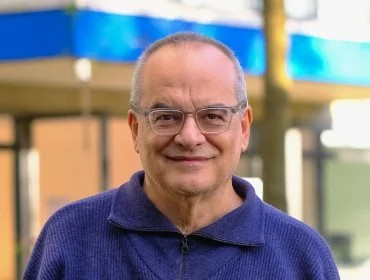
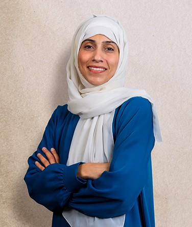

A research symposium connecting perceptive AI, SDG observatories, sustainable infrastructure, sovereign capacity and trustworthy agentic systems.
Register Now →22–23 June 2026
Amriteswari Hall
Hybrid
AI Safety Research Lab, Dept. of Cyber Security
Six leading researchers and practitioners share their work across perceptive AI, SDG observatories, infrastructure, and trustworthy agentic systems. Tap "Read bio" for full abstract and biography.

K1 · Online
K2 · Online
K3 · Online
K4 · OnlineTwo days of keynotes, technical sessions and networking. Switch between days to see the full schedule.
| Time | Session |
|---|---|
| 13:30 | Lighting the Lamp and Welcome Address |
| 14:00 – 15:00 | K1: Prof. João Pita Costa — Governing the IRCAI Bias-Aware AI-Enabled SDG Observatory (Online) |
| 15:00 – 16:00 | K2: Dr. Mérouane Debbah — The Next Big Wave in AI: Large Perceptive Models (Online) |
| 16:00 – 17:00 | K3: Prof. João Paulo Veiga — EU-LAC Collaboration on Infrastructure, Capacity and AI for the SDGs (Online) |
| 17:00 | Tea and Networking |
| Time | Session |
|---|---|
| 10:30 – 11:00 | K4: Prof. Dr. Hoda A. Alkhzaimi — Towards Reliable Agentic AI: Reasoning, Verification and Trustworthy Multi-Agent Systems (Online) |
| 11:00 – 12:00 | K5: Dr. Sivaramakrishnan R. Guruvayur — AMMA: Agentic Mediation & Monitoring Architecture (In-Presence) |
| 12:00 – 13:00 | K6: Gilad Gressel — Rules for Neural Traffic: A New Defensive Layer for LLMs (In-Presence) |
| 13:00 – 13:15 | Vote of Thanks |
Scan the QR code below or click the button to secure your spot at the symposium.
tec@amrita.edu
Technology Enabling Centre (TEC),
Amrita Vishwa Vidyapeetham, Amritapuri
Clappana P. O. , Kerala, India – 690 525.
+91 8921434611
Copyright © 2024 – Amrita Vishwa Vidyapeetham. All Rights Reserved.